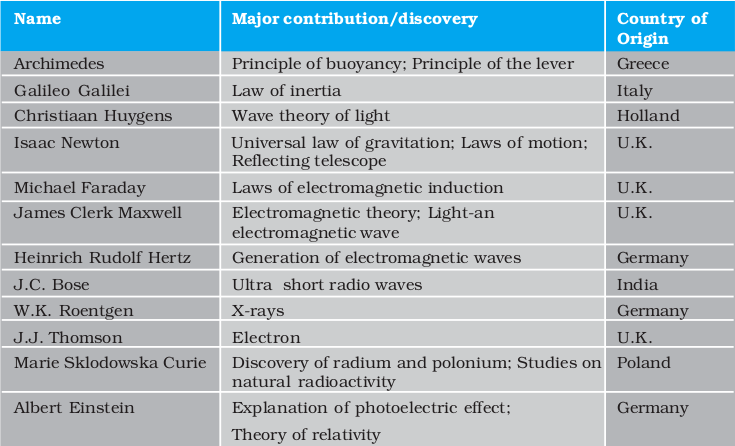
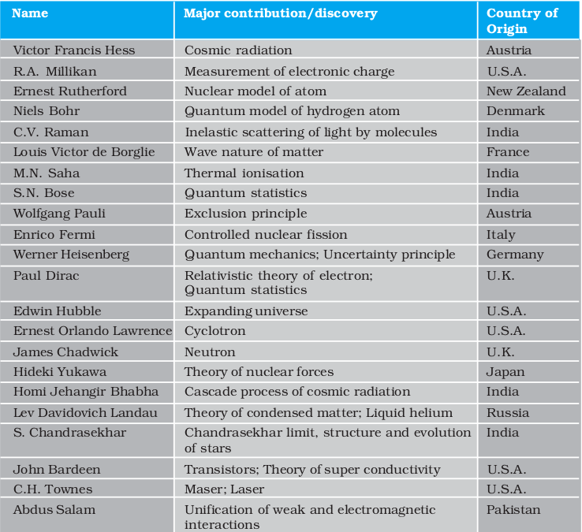
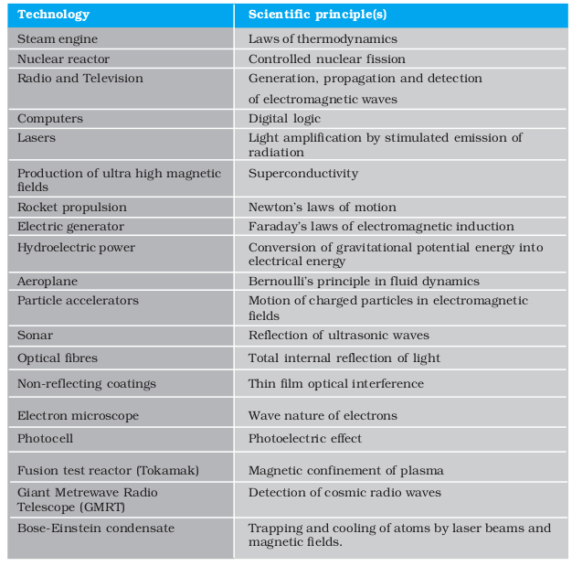
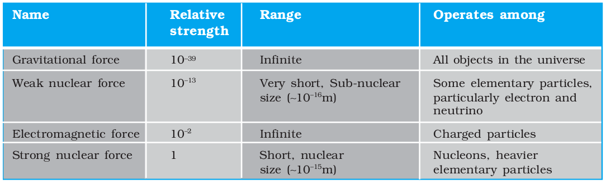

Chapter One
Physical World
1.1 What is physics ?
1.2 Scope and excitement of physics
1.3 Physics, technology and society
1.4 Fundamental forces in nature
1.5 Nature of physical laws
Summary
Exercises
1.1 What is physics ?
Humans have always been curious about the world around them. The night sky with its bright celestial objects has fascinated humans since time immemorial. The regular repetitions of the day and night, the annual cycle of seasons, the eclipses, the tides, the volcanoes, the rainbow have always been a source of wonder. The world has an astonishing variety of materials and a bewildering diversity of life and behaviour. The inquiring and imaginative human mind has responded to the wonder and awe of nature in different ways. One kind of response from the earliest times has been to observe the physical environment carefully, look for any meaningful patterns and relations in natural phenomena, and build and use new tools to interact with nature. This human endeavour led, in course of time, to modern science and technology.
The word Science originates from the Latin verb Scientia meaning ‘to know’. The Sanskrit word Vijnan and the Arabic word Ilm convey similar meaning, namely ‘knowledge’. Science, in a broad sense, is as old as human species. The early civilisations of Egypt, India, China, Greece, Mesopotamia and many others made vital contributions to its progress. From the sixteenth century onwards, great strides were made in science in Europe. By the middle of the twentieth century, science had become a truly international enterprise, with many cultures and countries contributing to its rapid growth.
What is Science and what is the so-called Scientific Method? Science is a systematic attempt to understand natural phenomena in as much detail and depth as possible, and use the knowledge so gained to predict, modify and control phenomena. Science is exploring, experimenting and predicting from what we see around us. The curiosity to learn about the world, unravelling the secrets of nature is the first step towards the discovery of science. The scientific method involves several interconnected steps : Systematic observations, controlled experiments, qualitative and quantitative reasoning, mathematical modelling, prediction and verification or falsification of theories. Speculation and conjecture also have a place in science; but ultimately, a scientific theory, to be acceptable, must be verified by relevant observations or experiments. There is much philosophical debate about the nature and method of science that we need not discuss here.
The interplay of theory and observation (or experiment) is basic to the progress of science. Science is ever dynamic. There is no ‘final’ theory in science and no unquestioned authority among scientists. As observations improve in detail and precision or experiments yield new results, theories must account for them, if necessary, by introducing modifications. Sometimes the modifications may not be drastic and may lie within the framework of existing theory. For example, when Johannes Kepler (1571-1630) examined the extensive data on planetary motion collected by Tycho Brahe (1546-1601), the planetary circular orbits in heliocentric theory (sun at the centre of the solar system) imagined by Nicolas Copernicus (1473–1543) had to be replaced by elliptical orbits to fit the data better. Occasionally, however, the existing theory is simply unable to explain new observations. This causes a major upheaval in science. In the beginning of the twentieth century, it was realised that Newtonian mechanics, till then a very successful theory, could not explain some of the most basic features of atomic phenomena. Similarly, the then accepted wave picture of light failed to explain the photoelectric effect properly. This led to the development of a radically new theory (Quantum Mechanics) to deal with atomic and molecular phenomena.
Just as a new experiment may suggest an alternative theoretical model, a theoretical advance may suggest what to look for in some experiments. The result of experiment of scattering of alpha particles by gold foil, in 1911 by Ernest Rutherford (1871–1937) established the nuclear model of the atom, which then became the basis of the quantum theory of hydrogen atom given in 1913 by Niels Bohr (1885–1962). On the other hand, the concept of antiparticle was first introduced theoretically by Paul Dirac (1902–1984) in 1930 and confirmed two years later by the experimental discovery of positron (antielectron) by Carl Anderson.
Physics is a basic discipline in the category of Natural Sciences, which also includes other disciplines like Chemistry and Biology. The word Physics comes from a Greek word meaning nature. Its Sanskrit equivalent is Bhautiki that is used to refer to the study of the physical world. A precise definition of this discipline is neither possible nor necessary. We can broadly describe physics as a study of the basic laws of nature and their manifestation in different natural phenomena. The scope of physics is described briefly in the next section. Here we remark on two principal thrusts in physics : unification and reduction.
In Physics, we attempt to explain diverse physical phenomena in terms of a few concepts and laws. The effort is to see the physical world as manifestation of some universal laws in different domains and conditions. For example, the same law of gravitation (given by Newton) describes the fall of an apple to the ground, the motion of the moon around the earth and the motion of planets around the sun. Similarly, the basic laws of electromagnetism (Maxwell’s equations) govern all electric and magnetic phenomena. The attempts to unify fundamental forces of nature (section 1.4) reflect this same quest for unification.
A related effort is to derive the properties of a bigger, more complex, system from the properties and interactions of its constituent simpler parts. This approach is called reductionism and is at the heart of physics. For example, the subject of thermodynamics, developed in the nineteenth century, deals with bulk systems in terms of macroscopic quantities such as temperature, internal energy, entropy, etc. Subsequently, the subjects of kinetic theory and statistical mechanics interpreted these quantities in terms of the properties of the molecular constituents of the bulk system. In particular, the temperature was seen to be related to the average kinetic energy of molecules of the system.
1.2 Scope and excitement of physics
We can get some idea of the scope of physics by looking at its various sub-disciplines. Basically, there are two domains of interest : macroscopic and microscopic. The macroscopic domain includes phenomena at the laboratory, terrestrial and astronomical scales. The microscopic domain includes atomic, molecular and nuclear phenomena*. Classical Physics deals mainly with macroscopic phenomena and includes subjects like Mechanics, Electrodynamics, Optics and Thermodynamics. Mechanics founded on Newton’s laws of motion and the law of gravitation is concerned with the motion (or equilibrium) of particles, rigid and deformable bodies, and general systems of particles. The propulsion of a rocket by a jet of ejecting gases, propagation of water waves or sound waves in air, the equilibrium of a bent rod under a load, etc., are problems of mechanics. Electrodynamics deals with electric and magnetic phenomena associated with charged and magnetic bodies. Its basic laws were given by Coulomb, Oersted, Ampere and Faraday, and encapsulated by Maxwell in his famous set of equations. The motion of a current-carrying conductor in a magnetic field, the response of a circuit to an ac voltage (signal), the working of an antenna, the propagation of radio waves in the ionosphere, etc., are problems of electrodynamics. Optics deals with the phenomena involving light. The working of telescopes and microscopes, colours exhibited by thin films, etc., are topics in optics. Thermodynamics, in contrast to mechanics, does not deal with the motion of bodies as a whole. Rather, it deals with systems in macroscopic equilibrium and is concerned with changes in internal energy, temperature, entropy, etc., of the system through external work and transfer of heat. The efficiency of heat engines and refrigerators, the direction of a physical or chemical process, etc., are problems of interest in thermodynamics.
The microscopic domain of physics deals with the constitution and structure of matter at the minute scales of atoms and nuclei (and even lower scales of length) and their interaction with different probes such as electrons, photons and other elementary particles. Classical physics is inadequate to handle this domain and Quantum Theory is currently accepted as the proper framework for explaining microscopic phenomena. Overall, the edifice of physics is beautiful and imposing and you will appreciate it more as you pursue the subject.
Fig. 1.1 Theory and experiment go hand in hand in physics and help each other’s progress. The alpha scattering experiments of Rutherford gave the nuclear model of the atom.

You can now see that the scope of physics is truly vast. It covers a tremendous range of magnitude of physical quantities like length, mass, time, energy, etc. At one end, it studies phenomena at the very small scale of length (10-14 m or even less) involving electrons, protons, etc.; at the other end, it deals with astronomical phenomena at the scale of galaxies or even the entire universe whose extent is of the order of 1026 m. The two length scales differ by a factor of 1040 or even more. The range of time scales can be obtained by dividing the length scales by the speed of light : 10–22 s to 1018 s. The range of masses goes from, say, 10–30 kg (mass of an electron) to 1055 kg (mass of known observable universe). Terrestrial phenomena lie somewhere in the middle of this range.
* Recently, the domain intermediate between the macroscopic and the microscopic (the so-called mesoscopic physics), dealing with a few tens or hundreds of atoms, has emerged as an exciting field of research.
Physics is exciting in many ways. To some people the excitement comes from the elegance and universality of its basic theories, from the fact that a few basic concepts and laws can explain phenomena covering a large range of magnitude of physical quantities. To some others, the challenge in carrying out imaginative new experiments to unlock the secrets of nature, to verify or refute theories, is thrilling. Applied physics is equally demanding. Application and exploitation of physical laws to make useful devices is the most interesting and exciting part and requires great ingenuity and persistence of effort.
Hypothesis, axioms and models
One should not think that everything can be proved with physics and mathematics. All physics, and also mathematics, is based on assumptions, each of which is variously called a hypothesis or axiom or postulate, etc.
For example, the universal law of gravitation proposed by Newton is an assumption or hypothesis, which he proposed out of his ingenuity. Before him, there were several observations, experiments and data, on the motion of planets around the sun, motion of the moon around the earth, pendulums, bodies falling towards the earth etc. Each of these required a separate explanation, which was more or less qualitative. What the universal law of gravitation says is that, if we assume that any two bodies in the universe attract each other with a force proportional to the product of their masses and inversely proportional to the square of the distance between them, then we can explain all these observations in one stroke. It not only explains these phenomena, it also allows us to predict the results of future experiments.
A hypothesis is a supposition without assuming that it is true. It would not be fair to ask anybody to prove the universal law of gravitation, because it cannot be proved. It can be verified and substantiated by experiments and observations.
An axiom is a self-evident truth while a model is a theory proposed to explain observed phenomena. But you need not worry at this stage about the nuances in using these words. For example, next year you will learn about Bohr’s model of hydrogen atom, in which Bohr assumed that an electron in the hydrogen atom follows certain rules (postutates). Why did he do that? There was a large amount of spectroscopic data before him which no other theory could explain. So Bohr said that if we assume that an atom behaves in such a manner, we can explain all these things at once.
Einstein’s special theory of relativity is also based on two postulates, the constancy of the speed of electromagnetic radiation and the validity of physical laws in all inertial frame of reference. It would not be wise to ask somebody to prove that the speed of light in vacuum is constant, independent of the source or observer.
In mathematics too, we need axioms and hypotheses at every stage. Euclid’s statement that parallel lines never meet, is a hypothesis. This means that if we assume this statement, we can explain several properties of straight lines and two or three dimensional figures made out of them. But if you don’t assume it, you are free to use a different axiom and get a new geometry, as has indeed happened in the past few centuries and decades.
What lies behind the phenomenal progress of physics in the last few centuries? Great progress usually accompanies changes in our basic perceptions. First, it was realised that for scientific progress, only qualitative thinking, though no doubt important, is not enough. Quantitative measurement is central to the growth of science, especially physics, because the laws of nature happen to be expressible in precise mathematical equations. The second most important insight was that the basic laws of physics are universal — the same laws apply in widely different contexts. Lastly, the strategy of approximation turned out to be very successful. Most observed phenomena in daily life are rather complicated manifestations of the basic laws. Scientists recognised the importance of extracting the essential features of a phenomenon from its less significant aspects. It is not practical to take into account all the complexities of a phenomenon in one go. A good strategy is to focus first on the essential features, discover the basic principles and then introduce corrections to build a more refined theory of the phenomenon. For example, a stone and a feather dropped from the same height do not reach the ground at the same time. The reason is that the essential aspect of the phenomenon, namely free fall under gravity, is complicated by the presence of air resistance. To get the law of free fall under gravity, it is better to create a situation wherein the air resistance is negligible. We can, for example, let the stone and the feather fall through a long evacuated tube. In that case, the two objects will fall almost at the same rate, giving the basic law that acceleration due to gravity is independent of the mass of the object. With the basic law thus found, we can go back to the feather, introduce corrections due to air resistance, modify the existing theory and try to build a more realistic theory of objects falling to the earth under gravity.
1.3 Physics, technology and society
The connection between physics, technology and society can be seen in many examples. The discipline of thermodynamics arose from the need to understand and improve the working of heat engines. The steam engine, as we know, is inseparable from the Industrial Revolution in England in the eighteenth century, which had great impact on the course of human civilisation. Sometimes technology gives rise to new physics; at other times physics generates new technology. An example of the latter is the wireless communication technology that followed the discovery of the basic laws of electricity and magnetism in the nineteenth century. The applications of physics are not always easy to foresee. As late as 1933, the great physicist Ernest Rutherford had dismissed the possibility of tapping energy from atoms. But only a few years later, in 1938, Hahn and Meitner discovered the phenomenon of neutron-induced fission of uranium, which would serve as the basis of nuclear power reactors and nuclear weapons. Yet another important example of physics giving rise to technology is the silicon ‘chip’ that triggered the computer revolution in the last three decades of the twentieth century. A most significant area to which physics has and will contribute is the development of alternative energy resources. The fossil fuels of the planet are dwindling fast and there is an urgent need to discover new and affordable sources of energy. Considerable progress has already been made in this direction (for example, in conversion of solar energy, geothermal energy, etc., into electricity), but much more is still to be accomplished.
Table1.1 lists some of the great physicists, their major contribution and the country of origin. You will appreciate from this table the multi-cultural, international character of the scientific endeavour. Table 1.2 lists some important technologies and the principles of physics they are based on. Obviously, these tables are not exhaustive. We urge you to try to add many names and items to these tables with the help of your teachers, good books and websites on science. You will find that this exercise is very educative and also great fun. And, assuredly, it will never end. The progress of science is unstoppable!
Physics is the study of nature and natural phenomena. Physicists try to discover the rules that are operating in nature, on the basis of observations, experimentation and analysis. Physics deals with certain basic rules/laws governing the natural world. What is the nature of physical laws? We shall now discuss the nature of fundamental forces and the laws that govern the diverse phenomena of the physical world.
Table 1.1 Some physicists from different countries of the world and their major contributions


1.4 Fundamental forces in nature*
We all have an intuitive notion of force. In our experience, force is needed to push, carry or throw objects, deform or break them. We also experience the impact of forces on us, like when a moving object hits us or we are in a merry-go-round. Going from this intuitive notion to the proper scientific concept of force is not a trivial matter. Early thinkers like Aristotle had wrong ideas about it. The correct notion of force was arrived at by Isaac Newton in his famous laws of motion. He also gave an explicit form for the force for gravitational attraction between two bodies. We shall learn these matters in subsequent chapters.
* Sections 1.4 and 1.5 contain several ideas that you may not grasp fully in your first reading. However, we advise you to read them carefully to develop a feel for some basic aspects of physics. These are some of the areas which continue to occupy the physicists today.
In the macroscopic world, besides the gravitational force, we encounter several kinds of forces: muscular force, contact forces between bodies, friction (which is also a contact force parallel to the surfaces in contact), the forces exerted by compressed or elongated springs and taut strings and ropes (tension), the force of buoyancy and viscous force when solids are in contact with fluids, the force due to pressure of a fluid, the force due to surface tension of a liquid, and so on. There are also forces involving charged and magnetic bodies. In the microscopic domain again, we have electric and magnetic forces, nuclear forces involving protons and neutrons, interatomic and intermolecular forces, etc. We shall get familiar with some of these forces in later parts of this course.
Table 1.2 Link between technology and physics

A great insight of the twentieth century physics is that these different forces occurring in different contexts actually arise from only a small number of fundamental forces in nature. For example, the elastic spring force arises due to the net attraction/repulsion between the neighbouring atoms of the spring when the spring is elongated/compressed. This net attraction/repulsion can be traced to the (unbalanced) sum of electric forces between the charged constituents of the atoms.
In principle, this means that the laws for ‘derived’ forces (such as spring force, friction) are not independent of the laws of fundamental forces in nature. The origin of these derived forces is, however, very complex.
At the present stage of our understanding, we know of four fundamental forces in nature, which are described in brief here :
Albert Einstein (1879-1955)
Albert Einstein, born in Ulm, Germany in 1879, is universally regarded as one of the greatest physicists of all time. His astonishing scientific career began with the publication of three path-breaking papers in 1905. In the first paper, he introduced the notion of light quanta (now called photons) and used it to explain the features of photoelectric effect that the classical wave theory of radiation could not account for. In the second paper, he developed a theory of Brownian motion that was confirmed experimentally a few years later and provided a convincing evidence of the atomic picture of matter. The third paper gave birth to the special theory of relativity that made Einstein a legend in his own life time. In the next decade, he explored the consequences of his new theory which included, among other things, the mass-energy equivalence enshrined in his famous equation E = mc2. He also created the general version of relativity (The General Theory of Relativity), which is the modern theory of gravitation. Some of Einstein’s most significant later contributions are: the notion of stimulated emission introduced in an alternative derivation of Planck’s blackbody radiation law, static model of the universe which started modern cosmology, quantum statistics of a gas of massive bosons, and a critical analysis of the foundations of quantum mechanics. The year 2005 was declared as International Year of Physics, in recognition of Einstein’s monumental contribution to physics, in year 1905, describing revolutionary scientific ideas that have since influenced all of modern physics.
1.4.1 Gravitational Force
The gravitational force is the force of mutual attraction between any two objects by virtue of their masses. It is a universal force. Every object experiences this force due to every other object in the universe. All objects on the earth, for example, experience the force of gravity due to the earth. In particular, gravity governs the motion of the moon and artificial satellites around the earth, motion of the earth and planets around the sun, and, of course, the motion of bodies falling to the earth. It plays a key role in the large-scale phenomena of the universe, such as formation and evolution of stars, galaxies and galactic clusters.
1.4.2 Electromagnetic Force
Electromagnetic force is the force between charged particles. In the simpler case when charges are at rest, the force is given by Coulomb’s law : attractive for unlike charges and repulsive for like charges. Charges in motion produce magnetic effects and a magnetic field gives rise to a force on a moving charge. Electric and magnetic effects are, in general, inseparable – hence the name electromagnetic force. Like the gravitational force, electromagnetic force acts over large distances and does not need any intervening medium. It is enormously strong compared to gravity. The electric force between two protons, for example, is 1036 times the gravitational force between them, for any fixed distance.
Matter, as we know, consists of elementary charged constituents like electrons and protons. Since the electromagnetic force is so much stronger than the gravitational force, it dominates all phenomena at atomic and molecular scales. (The other two forces, as we shall see, operate only at nuclear scales.) Thus it is mainly the electromagnetic force that governs the structure of atoms and molecules, the dynamics of chemical reactions and the mechanical, thermal and other properties of materials. It underlies the macroscopic forces like ‘tension’, ‘friction’, ‘normal force’, ‘spring force’, etc.
Gravity is always attractive, while electromagnetic force can be attractive or repulsive. Another way of putting it is that mass comes only in one variety (there is no negative mass), but charge comes in two varieties : positive and negative charge. This is what makes all the difference. Matter is mostly electrically neutral (net charge is zero). Thus, electric force is largely zero and gravitational force dominates terrestrial phenomena. Electric force manifests itself in atmosphere where the atoms are ionised and that leads to lightning.
Satyendranath Bose (1894-1974)
Satyendranath Bose, born in Calcutta in 1894, is among the great Indian physicists who made a fundamental contribution to the advance of science in the twentieth century. An outstanding student throughout, Bose started his career in 1916 as a lecturer in physics in Calcutta University; five years later he joined Dacca University. Here in 1924, in a brilliant flash of insight, Bose gave a new derivation of Planck’s law, treating radiation as a gas of photons and employing new statistical methods of counting of photon states. He wrote a short paper on the subject and sent it to Einstein who immediately recognised its great significance, translated it in German and forwarded it for publication. Einstein then applied the same method to a gas of molecules.
The key new conceptual ingredient in Bose’s work was that the particles were regarded as indistinguishable, a radical departure from the assumption that underlies the classical Maxwell-Boltzmann statistics. It was soon realised that the new Bose-Einstein statistics was applicable to particles with integers spins, and a new quantum statistics (Fermi-Dirac statistics) was needed for particles with half integers spins satisfying Pauli’s exclusion principle. Particles with integers spins are now known as bosons in honour of Bose.
An important consequence of Bose-Einstein statistics is that a gas of molecules below a certain temperature will undergo a phase transition to a state where a large fraction of atoms populate the same lowest energy state. Some seventy years were to pass before the pioneering ideas of Bose, developed further by Einstein, were dramatically confirmed in the observation of a new state of matter in a dilute gas of ultra cold alkali atoms - the Bose-Eintein condensate.
If we reflect a little, the enormous strength of the electromagnetic force compared to gravity is evident in our daily life. When we hold a book in our hand, we are balancing the gravitational force on the book due to the huge mass of the earth by the ‘normal force’ provided by our hand. The latter is nothing but the net electromagnetic force between the charged constituents of our hand and the book, at the surface in contact. If electromagnetic force were not intrinsically so much stronger than gravity, the hand of the strongest man would crumble under the weight of a feather ! Indeed, to be consistent, in that circumstance, we ourselves would crumble under our own weight !
1.4.3 Strong Nuclear Force
The strong nuclear force binds protons and neutrons in a nucleus. It is evident that without some attractive force, a nucleus will be unstable due to the electric repulsion between its protons. This attractive force cannot be gravitational since force of gravity is negligible compared to the electric force. A new basic force must, therefore, be invoked. The strong nuclear force is the strongest of all fundamental forces, about 100 times the electromagnetic force in strength. It is charge-independent and acts equally between a proton and a proton, a neutron and a neutron, and a proton and a neutron. Its range is, however, extremely small, of about nuclear dimensions (10–15m). It is responsible for the stability of nuclei. The electron, it must be noted, does not experience this force.
Recent developments have, however, indicated that protons and neutrons are built out of still more elementary constituents called quarks.
1.4.4 Weak Nuclear Force
The weak nuclear force appears only in certain nuclear processes such as the β-decay of a nucleus. In β-decay, the nucleus emits an electron and an uncharged particle called neutrino. The weak nuclear force is not as weak as the gravitational force, but much weaker than the strong nuclear and electromagnetic forces. The range of weak nuclear force is exceedingly small, of the order of 10-16 m.
1.4.5 Towards Unification of Forces
We remarked in section 1.1 that unification is a basic quest in physics. Great advances in physics often amount to unification of different theories and domains. Newton unified terrestrial and celestial domains under a common law of gravitation. The experimental discoveries of Oersted and Faraday showed that electric and magnetic phenomena are in general inseparable. Maxwell unified electromagnetism and optics with the discovery that light is an electromagnetic wave. Einstein attempted to unify gravity and electromagnetism but could not succeed in this venture. But this did not deter physicists from zealously pursuing the goal of unification of forces.
Table 1.3 Fundamental forces of nature

Recent decades have seen much progress on this front. The electromagnetic and the weak nuclear force have now been unified and are seen as aspects of a single ‘electro-weak’ force. What this unification actually means cannot be explained here. Attempts have been (and are being) made to unify the electro-weak and the strong force and even to unify the gravitational force with the rest of the fundamental forces. Many of these ideas are still speculative and inconclusive. Table 1.4 summarises some of the milestones in the progress towards unification of forces in nature.
Table 1.4 Progress in unification of different forces/domains in nature

1.5 NATURE OF PHYSICAL LAWS
Physicists explore the universe. Their investigations, based on scientific processes, range from particles that are smaller than atoms in size to stars that are very far away. In addition to finding the facts by observation and experimentation, physicists attempt to discover the laws that summarise (often as mathematical equations) these facts.
In any physical phenomenon governed by different forces, several quantities may change with time. A remarkable fact is that some special physical quantities, however, remain constant in time. They are the conserved quantities of nature. Understanding these conservation principles is very important to describe the observed phenomena quantitatively.
For motion under an external conservative force, the total mechanical energy i.e. the sum of kinetic and potential energy of a body is a constant. The familiar example is the free fall of an object under gravity. Both the kinetic energy of the object and its potential energy change continuously with time, but the sum remains fixed. If the object is released from rest, the initial potential energy is completely converted into the kinetic energy of the object just before it hits the ground. This law restricted for a conservative force should not be confused with the general law of conservation of energy of an isolated system (which is the basis of the First Law of Thermodynamics).
The concept of energy is central to physics and the expressions for energy can be written for every physical system. When all forms of energy e.g., heat, mechanical energy, electrical energy etc., are counted, it turns out that energy is conserved. The general law of conservation of energy is true for all forces and for any kind of transformation between different forms of energy. In the falling object example, if you include the effect of air resistance during the fall and see the situation after the object hits the ground and stays there, the total mechanical energy is obviously not conserved. The general law of energy conservation, however, is still applicable. The initial potential energy of the stone gets transformed into other forms of energy : heat and sound. (Ultimately, sound after it is absorbed becomes heat.) The total energy of the system (ston e plus the surroundings) remains unchanged.
The law of conservation of energy is thought to be valid across all domains of nature, from the microscopic to the macroscopic. It is routinely applied in the analysis of atomic, nuclear and elementary particle processes. At the other end, all kinds of violent phenomena occur in the universe all the time. Yet the total energy of the universe (the most ideal isolated system possible !) is believed to remain unchanged.
Until the advent of Einstein’s theory of relativity, the law of conservation of mass was regarded as another basic conservation law of nature, since matter was thought to be indestructible. It was (and still is) an important principle used, for example, in the analysis of chemical reactions. A chemical reaction is basically a rearrangement of atoms among different molecules. If the total binding energy of the reacting molecules is less than the total binding energy of the product molecules, the difference appears as heat and the reaction is exothermic. The opposite is true for energy absorbing (endothermic) reactions. However, since the atoms are merely rearranged but not destroyed, the total mass of the reactants is the same as the total mass of the products in a chemical reaction. The changes in the binding energy are too small to be measured as changes in mass.
According to Einstein’s theory, mass m is equivalent to energy E given by the relation E= mc2 , where c is speed of light in vacuum.
In a nuclear process mass gets converted to energy (or vice-versa). This is the energy which is released in a nuclear power generation and nuclear explosions.
Sir C.V. Raman (1888-1970)
Chandrashekhara Venkata Raman was born on 07 Nov 1888 in Thiruvanaikkaval. He finished his schooling by the age of eleven. He graduated from Presidency College, Madras. After finishing his education he joined financial services of the Indian Government.
While in Kolkata, he started working on his area of interest at Indian Association for Cultivation of Science founded by Dr. Mahendra Lal Sirkar, during his evening hours. His area of interest included vibrations, variety of musical instruments, ultrasonics, diffraction and so on.
In 1917 he was offered Professorship at Calcutta University. In 1924 he was elected ‘Fellow’ of the Royal Society of London and received Nobel prize in Physics in 1930 for his discovery, now known as Raman Effect.
The Raman Effect deals with scattering of light by molecules of a medium when they are excited to vibrational energy levels. This work opened totally new avenues for research for years to come.
He spent his later years at Bangalore, first at Indian Institute of Science and then at Raman Research Institute. His work has inspired generation of young students.
Energy is a scalar quantity. But all conserved quantities are not necessarily scalars. The total linear momentum and the total angular momentum (both vectors) of an isolated system are also conserved quantities. These laws can be derived from Newton’s laws of motion in mechanics. But their validity goes beyond mechanics. They are the basic conservation laws of nature in all domains, even in those where Newton’s laws may not be valid.
Besides their great simplicity and generality, the conservation laws of nature are very useful in practice too. It often happens that we cannot solve the full dynamics of a complex problem involving different particles and forces. The conservation laws can still provide useful results. For example, we may not know the complicated forces that act during a collision of two automobiles; yet momentum conservation law enables us to bypass the complications and predict or rule out possible outcomes of the collision. In nuclear and elementary particle phenomena also, the conservation laws are important tools of analysis. Indeed, using the conservation laws of energy and momentum for β-decay, Wolfgang Pauli (1900 -1958) correctly predicted in 1931 the existence of a new particle (now called neutrino) emitted in β-decay along with the electron.
Conservation laws have a deep connection with symmetries of nature that you will explore in more advanced courses in physics. For example, an important observation is that the laws of nature do not change with time! If you perform an experiment in your laboratory today and repeat the same experiment (on the same objects under identical conditions) after a year, the results are bound to be the same. It turns out that this symmetry of nature with respect to translation (i.e. displacement) in time is equivalent to the law of conservation of energy. Likewise, space is homogeneous and there is no (intrinsically) preferred location in the universe. To put it more clearly, the laws of nature are the same everywhere in the universe. (Caution : the phenomena may differ from place to place because of differing conditions at different locations. For example, the acceleration due to gravity at the moon is one-sixth that at the earth, but the law of gravitation is the same both on the moon and the earth.) This symmetry of the laws of nature with respect to translation in space gives rise to conservation of linear momentum. In the same way isotropy of space (no intrinsically preferred direction in space) underlies the law of conservation of angular momentum*.
* See Chapter 7
The conservation laws of charge and other attributes of elementary particles can also be related to certain abstract symmetries. Symmetries of space and time and other abstract symmetries play a central role in modern theories of fundamental forces in nature.
Conservation laws in physics
Conservation of energy, momentum, angular momentum, charge, etc are considered to be fundamental laws in physics. At this moment, there are many such conservation laws. Apart from the above four, there are others which mostly deal with quantities which have been introduced in nuclear and particle physics. Some of the conserved quantities are called spin, baryon number, strangeness, hypercharge, etc, but you need not worry about them.
A conservation law is a hypothesis, based on observations and experiments. It is important to remember that a conservation law cannot be proved. It can be verified, or disproved, by experiments. An experiment whose result is in conformity with the law verifies or substantiates the law; it does not prove the law. On the other hand, a single experiment whose result goes against the law is enough to disprove it.
It would be wrong to ask somebody to prove the law of conservation of energy. This law is an outcome of our experience over several centuries, and it has been found to be valid in all experiments, in mechanics, thermodynamics, electromagnetism, optics, atomic and nuclear physics, or any other area.
Some students feel that they can prove the conservation of mechanical energy from a body falling under gravity, by adding the kinetic and potential energies at a point and showing that it turns out to be constant. As pointed out above, this is only a verification of the law, not its proof.
SUMMARY
1. Physics deals with the study of the basic laws of nature and their manifestation in different phenomena. The basic laws of physics are universal and apply in widely different contexts and conditions.
2. The scope of physics is wide, covering a tremendous range of magnitude of physical quantities.
3. Physics and technology are related to each other. Sometimes technology gives rise to new physics; at other times physics generates new technology. Both have direct impact on society.
4. There are four fundamental forces in nature that govern the diverse phenomena of the macroscopic and the microscopic world. These are the ‘gravitational force’, the ‘electromagnetic force’, the ‘strong nuclear force’, and the ‘weak nuclear force’. Unification of different forces/domains in nature is a basic quest in physics.
5. The physical quantities that remain unchanged in a process are called conserved quantities. Some of the general conservation laws in nature include the laws of conservation of mass, energy, linear momentum, angular momentum, charge, parity, etc. Some conservation laws are true for one fundamental force but not for the other.
6. Conservation laws have a deep connection with symmetries of nature. Symmetries of space and time, and other types of symmetries play a central role in modern theories of fundamental forces in nature.
Exercises
Note for the student The exercises given here are meant to enhance your awareness about the issues surrounding science, technology and society and to encourage you to think and formulate your views about them. The questions may not have clear-cut ‘objective’ answers.
Note for the teacher
The exercises given here are not for the purpose of a formal examination.
1.1 Some of the most profound statements on the nature of science have come from Albert Einstein, one of the greatest scientists of all time. What do you think did Einstein mean when he said : “The most incomprehensible thing about the world is that it is comprehensible”?
1.2 “Every great physical theory starts as a heresy and ends as a dogma”. Give some examples from the history of science of the validity of this incisive remark.
1.3 “Politics is the art of the possible”. Similarly, “Science is the art of the soluble”. Explain this beautiful aphorism on the nature and practice of science.
1.4 Though India now has a large base in science and technology, which is fast expanding, it is still a long way from realising its potential of becoming a world leader in science. Name some important factors, which in your view have hindered the advancement of science in India.
1.5 No physicist has ever “seen” an electron. Yet, all physicists believe in the existence of electrons. An intelligent but superstitious man advances this analogy to argue that ‘ghosts’ exist even though no one has ‘seen’ one. How will you refute his argument?
1.6 The shells of crabs found around a particular coastal location in Japan seem mostly to resemble the legendary face of a Samurai. Given below are two explanations of this observed fact. Which of these strikes you as a scientific explanation ?
(a) A tragic sea accident several centuries ago drowned a young Samurai. As a tribute to his bravery, nature through its inscrutable ways immortalised his face by imprinting it on the crab shells in that area.
(b) After the sea tragedy, fishermen in that area, in a gesture of honour to their dead hero, let free any crab shell caught by them which accidentally had a shape resembling the face of a Samurai. Consequently, the particular shape of the crab shell survived longer and therefore in course of time the shape was genetically propagated. This is an example of evolution by artificial selection.
[Note : This interesting illustration taken from Carl Sagan’s ‘The Cosmos’ highlights the fact that often strange and inexplicable facts which on the first sight appear ‘supernatural’ actually turn out to have simple scientific explanations. Try to think out other examples of this kind].
1.7 The industrial revolution in England and Western Europe more than two centuries ago was triggered by some key scientific and technological advances. What were these advances ?
1.8 It is often said that the world is witnessing now a second industrial revolution, which will transform the society as radically as did the first. List some key contemporary areas of science and technology, which are responsible for this revolution.
1.9 Write in about 1000 words a fiction piece based on your speculation on the science and technology of the twenty-second century.
1.10 Attempt to formulate your ‘moral’ views on the practice of science. Imagine yourself stumbling upon a discovery, which has great academic interest but is certain to have nothing but dangerous consequences for the human society. How, if at all, will you resolve your dilemma ?
1.11 Science, like any knowledge, can be put to good or bad use, depending on the user. Given below are some of the applications of science. Formulate your views on whether the particular application is good, bad or something that cannot be so clearly categorised :
(a) Mass vaccination against small pox to curb and finally eradicate this disease from the population. (This has already been successfully done in India).
(b) Television for eradication of illiteracy and for mass communication of news and ideas.
(c) Prenatal sex determination
(d) Computers for increase in work efficiency
(e) Putting artificial satellites into orbits around the Earth
(f ) Development of nuclear weapons
(g) Development of new and powerful techniques of chemical and biological warfare).
(h) Purification of water for drinking
(i) Plastic surgery
(j ) Cloning
1.12 India has had a long and unbroken tradition of great scholarship — in mathematics, astronomy, linguistics, logic and ethics. Yet, in parallel with this, several superstitious and obscurantistic attitudes and practices flourished in our society and unfortunately continue even today — among many educated people too. How will you use your knowledge of science to develop strategies to counter these attitudes ?
1.13 Though the law gives women equal status in India, many people hold unscientific views on a woman’s innate nature, capacity and intelligence, and in practice give them a secondary status and role. Demolish this view using scientific arguments, and by quoting examples of great women in science and other spheres; and persuade yourself and others that, given equal opportunity, women are on par with men.
1.14 “It is more important to have beauty in the equations of physics than to have them agree with experiments”. The great British physicist P. A. M. Dirac held this view. Criticize this statement. Look out for some equations and results in this book which strike you as beautiful.
1.15 Though the statement quoted above may be disputed, most physicists do have a feeling that the great laws of physics are at once simple and beautiful. Some of the notable physicists, besides Dirac, who have articulated this feeling, are : Einstein, Bohr, Heisenberg, Chandrasekhar and Feynman. You are urged to make special efforts to get access to the general books and writings by these and other great masters of physics. (See the Bibliography at the end of this book.) Their writings are truly inspiring!
1.16 Textbooks on science may give you a wrong impression that studying science is dry and all too serious and that scientists are absent-minded introverts who never laugh or grin. This image of science and scientists is patently false. Scientists, like any other group of humans, have their share of humorists, and many have led their lives with a great sense of fun and adventure, even as they seriously pursued their scientific work. Two great physicists of this genre are Gamow and Feynman. You will enjoy reading their books listed in the Bibliography.